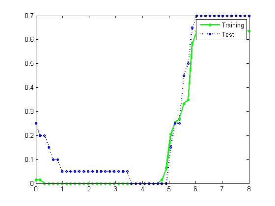
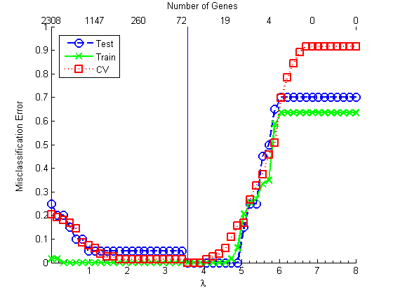
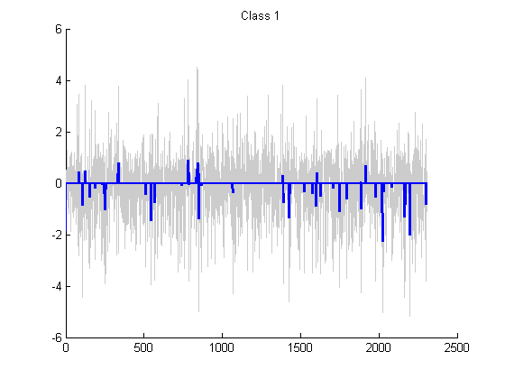
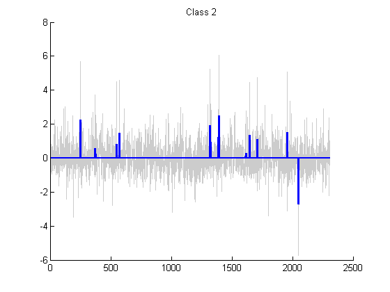
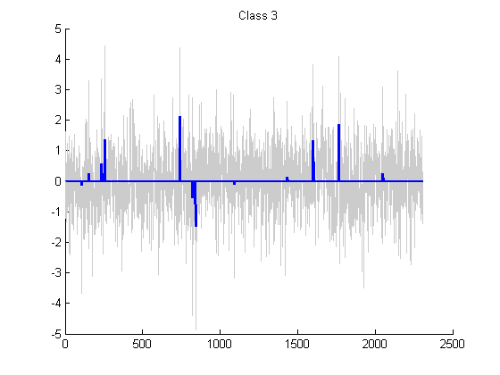
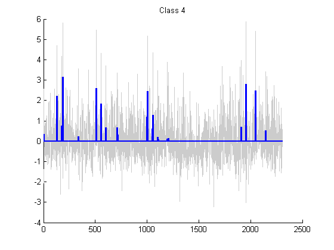

Contents
% Reproduce fig 18.4 from "Elements of statistical learning" 2nd edn
Import data
xtrain = importdata('khan.xtrain'); xtrain = xtrain'; ytrain = importdata('khan.ytrain'); ytrain = ytrain'; xtest = importdata('khan.xtest'); xtest = xtest'; fid = fopen('khan.ytest'); ytest = textscan(fid, '%n', 'delimiter', ' ',... 'treatAsEmpty', 'NA'); fclose(fid); ytest = ytest{1}; xtest = xtest(~isnan(ytest),:); ytest = ytest(~isnan(ytest)); fitFn = @(X,y,lam) naiveBayesGaussFitShrunkenCentroids(X, y, lam); predictFn = @(model, X) naiveBayesGaussPredict(model, X);
Error rates in the training and test sets for varying Delta
Deltas = linspace(0, 8, 50); lDelta = length(Deltas); nTrain = length(ytrain); nTest = length(ytest); for i=1:lDelta model = fitFn(xtrain, ytrain, Deltas(i)); yhatTrain = predictFn(model, xtrain); yhatTest = predictFn(model, xtest); errTrain(i) = sum(zeroOneLossFn(yhatTrain, ytrain))/nTrain; errTest(i) = sum(zeroOneLossFn(yhatTest, ytest))/nTest; numgenes(i) = sum(model.relevant); end figure; plot(Deltas, errTrain, 'go-', Deltas, errTest, 'bo:',... 'MarkerSize', 4, 'linewidth', 2) legend('Training', 'Test');
Cross validation
We have to combine train and test sets to get the same CV curve as in Hastie fig 18.4...
nFolds = 10; useSErule = false; [bestModel, bestDelta, errCV, se] = fitCV(Deltas, fitFn, predictFn,... @zeroOneLossFn, [xtrain;xtest], [ytrain;ytest], nFolds, useSErule); figure; lambda = Deltas; xticklam=[1:8]; xtickNgenes = numgenes(round(linspace(1,length(numgenes), length(xticklam)))); axisH=axes; set(axisH,'xlabel',xlabel('Number of Genes'),'layer','top',... 'xaxislocation','top','xlim',[xticklam(1) xticklam(end)],'xminortick','on',... 'ytick',[],'yticklabel',[],'xticklabel',xtickNgenes,'xtick',xticklam); hold on axes('position',get(axisH,'position'),'xminortick','on','xtick',xticklam,'xticklabel',xticklam,'layer','bottom') hold on plot(lambda,errTest,'bo--','markersize',10,'linewidth',2) plot(lambda,errTrain,'gx-','markersize',10,'linewidth',2) plot(lambda,errCV,'rs:','markersize',10,'linewidth',2) axis([0 lambda(end) 0 1]) xlabel('\lambda') ylabel('Misclassification Error','position',[-0.7 0.49 1.001]) %ticks=get(gca,'ytick'); %set(gca,'yticklabel',[]); %text(ticks*0-0.3,ticks-0.02,cellstr(num2str(ticks')),'rotation',90,'fontsize',15) legend( 'Test', 'Train', 'CV', 'Location', 'Best'); bestNdx = find(bestDelta==Deltas); fprintf('best lambda=%5.3f, ngenes = %d\n', bestDelta, numgenes(bestNdx)); line([bestDelta bestDelta], [0 1]); printPmtkFigure('shrunkenCentroidsErrVsLambda')
best lambda=3.592, ngenes = 59
Plot centroids
centShrunk = bestModel.offset; model = fitFn(xtrain, ytrain, 0); centUnshrunk = model.offset; [numGroups D] = size(centShrunk); for g=1:numGroups %subplot(4,1,g); figure; hold on; plot(1:D, centUnshrunk(g,:), 'Color', [.8 .8 .8]); plot(1:D, centShrunk(g,:), 'b', 'LineWidth', 2); title(sprintf('Class %d', g)); hold off; printPmtkFigure(sprintf('shrunkenCentroidsClass%d', g)) end   